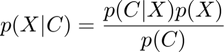
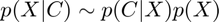
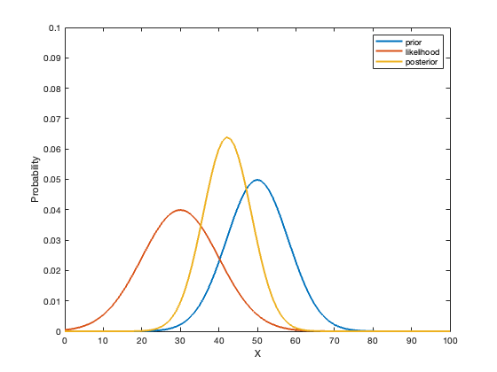
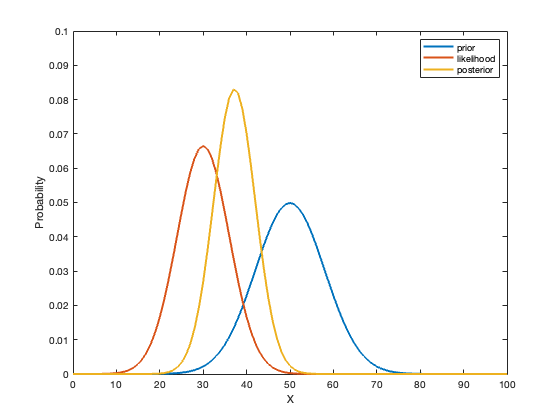

Contents
clear; close all; clc;
a)
Denis is present in a one-dimensional shopping mail. Let the location of Denis be given by X. The prior of Denis' location is a Gaussian distribution with mean of 50 and a variance of 64. The posterior distribution is computed based on the location of coffee cup. The likelihood of the cup being at the location given Denis' position follows a Gaussian distribution with mean 30 and a variance of 100. The goal is to compute the posterior distribution.
The prior is p(X). The likelihood is p(C|X) and the posterior is p(X|C). Using Bayes' rule, the posterior can be computed as:

Here p(C) is a normalizing factor and hence can be ignored for our purposes. Therefore, we have:

Using this formula, we can compute the posterior given the likelihood and prior distributions.
X = 0:100; % possible locations of Denis % prior Denis_prior_mean = 50; Denis_prior_variance = 64; prior_unnormalized = normpdf(X, Denis_prior_mean, sqrt(Denis_prior_variance)); prior = prior_unnormalized ./ sum(prior_unnormalized); % likelihood likelihood_mean = 30; likelihood_variance = 100; likelihood_unnormalized = normpdf(X, likelihood_mean, sqrt(likelihood_variance)); likelihood = likelihood_unnormalized ./ sum(likelihood_unnormalized); % posterior posterior_unnormalized = prior .* likelihood; posterior = posterior_unnormalized ./ sum(posterior_unnormalized); figure(); plot(X, prior, 'DisplayName', 'prior', 'LineWidth', 2) hold on; plot(X, likelihood, 'DisplayName', 'likelihood', 'LineWidth', 2) plot(X, posterior, 'DisplayName', 'posterior', 'LineWidth', 2) xlabel('X') ylabel('Probability') ylim([0, 0.1]) legend()
b)
In the scenario where the coffee cup is not that cold, the variance of the likelihood Gaussian decreases. However, the process of computing the posterior from the likelihood and prior remains the same.
X = 0:100; % possible locations of Denis % prior Denis_prior_mean = 50; Denis_prior_variance = 64; prior_unnormalized = normpdf(X, Denis_prior_mean, sqrt(Denis_prior_variance)); prior = prior_unnormalized ./ sum(prior_unnormalized); % likelihood likelihood_mean = 30; likelihood_variance = 36; likelihood_unnormalized = normpdf(X, likelihood_mean, sqrt(likelihood_variance)); likelihood = likelihood_unnormalized ./ sum(likelihood_unnormalized); % posterior posterior_unnormalized = prior .* likelihood; posterior = posterior_unnormalized ./ sum(posterior_unnormalized); figure(); plot(X, prior, 'DisplayName', 'prior', 'LineWidth', 2) hold on; plot(X, likelihood, 'DisplayName', 'likelihood', 'LineWidth', 2) plot(X, posterior, 'DisplayName', 'posterior', 'LineWidth', 2) xlabel('X') ylabel('Probability') ylim([0, 0.1]) legend()
We can see that as the mean of the likelihood than the mean of the prior, the likelihood pulls the posterior to have a lower mean in (a). The pull is also determined the variance of the likelihood. If the variance of the likelihood is high, then the certainty of the mean is lower and hence its impact on the pull of the posterior is weaker. On the other hand, if the variance is lower then the certainty of the mean is higher and hence its impact on the pull of the posterior is stronger. Therefore, compared to (a), we can see that the posterior in (b) has a lower mean and also a narrower distribution.